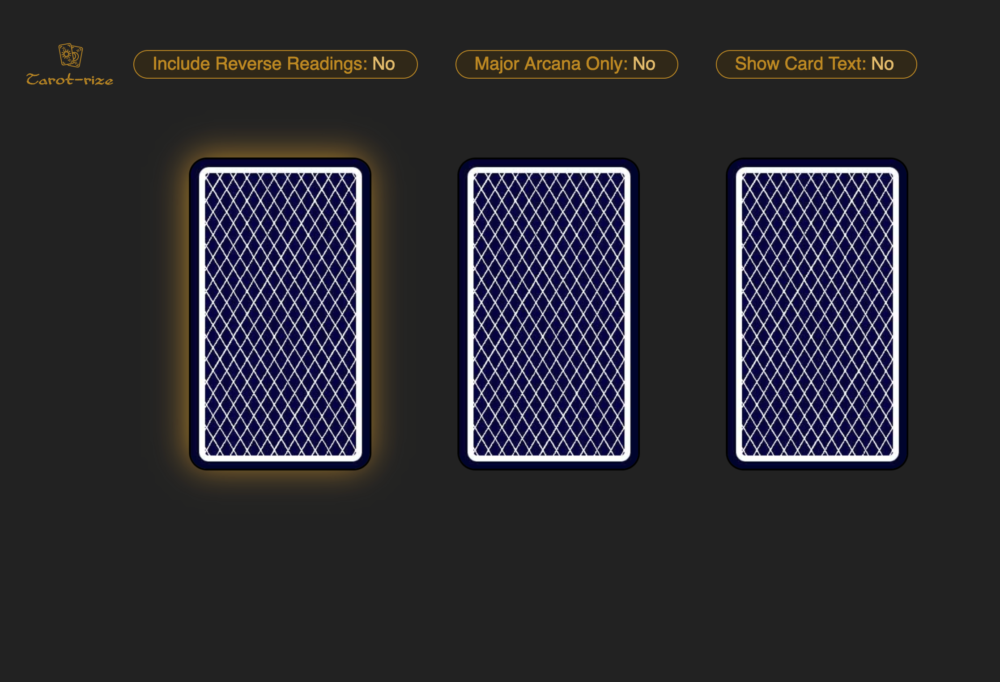

Tarot-rize was built for a friend who wanted to give tarot-readings with their tablet. It is also responsive for desktop and mobile.
Built with HTML, CSS and JS, it has the following functionalities:
- Flips each card with an animation
- Removes that card from the deck
- Toggle major arcana-only deck
- Toggle reverse (upside-down) draws
- Toggle card name as text
- Reset and shuffle button appears at the end of the reading
- Clears the cards with an animation
 Live
Live Github
Github